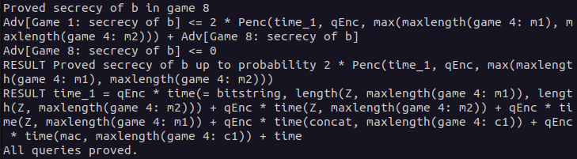

üìö First Proof
In this chapter we will have a look at a first proof using CryptoVerif. You will be guided to gather an understanding of how to work with CryptoVerif.
We will consider the Enc-then-MAC construction. Our goal is to show that Enc-then-MAC is IND-CPA secure, assuming the symmetric encryption is IND-CPA secure and the MAC is SUF-CMA secure.
Enc-then-MAC

The Enc-then-MAC construction works as follows.
- Encrypt the plaintext resulting in a ciphertext.
- Compute the MAC over this ciphertext.
- Concatenate the ciphertext and this MAC.
You can see a visualization of this construction on the right-hand side.
Input file
In this section we will build the input file for the proof together. CryptoVerif takes this file and tries to prove the queries we defined using the sequence of games technique.
ℹ️ Note that we will not strictly walk through every line of code from the top to the bottom. We will skip some lines for didactic reasons and explain them at the appropriate places.
Cryptographic assumptions
We start with the cryptographic assumptions we make for the cryptographic primitives used. In our case this is that the symmetric encryption is IND-CPA secure and the MAC is SUF-CMA secure.
CryptoVerif provides a library containing many standard cryptographic assumptions you can use (see docs/manual.pdf, Chapter 6). But you can also create your own assumptions.
You can see the code snippets for telling CryptoVerif that enc is IND-CPA secure and mac is SUF-CMA secure in the following.

Here the already in the default library default.ocvl defined macros IND_CPA_sym_enc and SUF_CMA_det_mac are expanded. For a better understanding we will discuss the technical side with the example of the IND_CPA_sym_enc marco.
First, let us inspect the meaning of the parameters of this macro.
- type of keys
- type of plaintexts
- type of ciphertexts
- encryption function
- decryption function
- function to inject the type bitstring to the type bitstringbot (The decryption returns either a bitstring (plaintext) or bottom (when the decryption fails). The type bitstringbot contains all bitstrings and bottom and is the return type of the decryption function.)
- function from bitstring to bitstring (This function models the leakage of the encryption. We usually interpret this as the leakage of the length of the plaintext.)
- probability of breaking the IND-CPA property
The functions enc, dec, injbot and Z are declared by the macro. It is important that they are not declared anywhere else. They can only be used after the macro has been expanded.
The types of keys, plaintexts, ciphertexts and the probability Penc must be declared before expanding the macro.
As you can see in the code snippet, the probability Penc is declared right before expanding the macro.
The types of plaintexts and ciphertexts are bitstring, a predefined type.
The type of keys is declared at the top of the input file, depicted in the following code snippet. There are also the type declarations for parameters for the macro SUF_CMA_det_mac.

The types are annotated with the lable [fixed] meaning that, for example, an encryption key is a bitstring of fixed length. Note that CryptoVerif does not need to know the specific length. Similar as it does not need to know the specific implementation of the symmetric encryption scheme or the MAC.
Note that it is possible to make an exact specification of the length to CryptoVerif.
Now we want to gain a better understanding of how CryptoVerif is doing game transformations. Once again, we will take the IND-CPA assumption as an example.
Let´s have a look at a code snippet from the macro IND_CPA_sym_enc in the default library default.ocvl depicted below.

This equivalence defines how the IND-CPA game hop looks like. CryptoVerif will look for code segments matching with the upper block (lines 136-138) and will replace them with the lower block (lines 140-142) to perform this game hop. If it does so, the probability stated in line 139 will be added to the bound of the advantage of an adversary.
Let´s compare the upper block (lines 136-138) with the lower block (lines 140-142) to see why this equivalence is suitable for the IND-CPA assumption.
We start with an uniformly random sampled encryption key k (line 136+140). The lines 137-138 and lines 141-142 are representing the encryption oracle using replication of the oracle Oenc.
ℹ️ Replication of oracles are used to indicate that an oracle can be executed multiple times. In the code snippet above the oracle Oenc is replicated N times. The variable N is no conrete value and the oracle is not indeed executed multiple times.
Both oracles Oenc take a cleartext x as input. But they differ in their output.
In the upper block the oracle returns the encryption of the cleartext x under the key k and the encryption seed r (line 138). This matches a regular encryption of cleartexts.
In the lower block the oracle does not encrypt the cleartext x but the leakage of the encryption Z(x) (line 142). For simplicity we will interpret the leakage of the encryption as the leakage of the lenght of the cleartext. We assume that Z(x) will return a bitstring with the same lenght as x consisting only of zeros.
This transformation matches the IND-CPA assumtion quite well as the ciphertexts cannot be used to gather any additional information about the cleartexts.
❗️ It is important that the requirements stated by this equivalence are strictly matched to perform this transformation.
If we assume that inside a game the seed r is chosen random outside of the replication and is reused for each encryption, then CryptoVerif is not allowed to perform this transformation as the requirements including the correct distribution for each variable are not matched.
Definition Enc-then-MAC
Further, we need to define how Enc-then-MAC works. Otherwise CryptoVerif would not know what the construction we try to prove looks like.
For the definition of the Enc-then-MAC construction we will need a function for concatenation. We are not interested in the concrete implementation of this function.
Therefore, we only declare the function using the keyword fun.
The keyword letfun is used when defining a function, i.e., giving a concrete implementation. We will use this one for the definition of the Enc-then-MAC encryption.
The declaration of the concatenation function is shown in the following.

The function concat takes parameters of type bitstring and macs and returns a variable of type bitstring. The annotation [data] indicates that this function is injective an its inverse can be computed efficiently.
Now that we talked about the concatenation function, we have everything we need to move on to the Enc-then-MAC construction. The definition of the Enc-then-MAC encryption is depicted in the following.

As we want to define the exact behaviour for the Enc-then-MAC encryption we use letfun for the definition of the function full_enc.
The function has three parameters that are needed.
First, there is the plaintext m of type bitstring. In CryptoVerif we consider plain- and ciphertexts as bitstrings. This means we consider cryptographic primitives (e.g. encryption) as mappings from bitstrings to bitstrings.
Further there are the encryption key k of type key, and the MAC key mk of type mkey.
We will use the encryption function enc declared inside of the macro IND_CPA_sym_enc to compute the encryption of the plaintext m under the encryption key k. This ciphertext is then stored inside the variable c1.
Next, we concatenate the ciphertext c1 with the MAC of the ciphertext c1 under the MAC key mk. This concatenation is the result of our Enc-then-MAC encryption function full_enc.
Note the difference between the usage of “;” and “.” in CryptoVerif.
Sequential execution is denoted by “;”. In the above code snippet you can see this in the line where c1 is set to the ciphertext. The semicolon indicates that there is a line of code following which should be executed afterwards.
The line with the concationation is the last expression belonging to full_enc. This block of code is ended with “.”.
Initial game to prove (including oracles)
Now we want to construct the initial game CryptoVerif should try to proof using the sequence of games. In our example this is the IND-CPA game. Note that for many games there are oracles the adversary can query. Here, an encryption oracle from the IND-CPA game is required. We will start with this oracle before proceeding with the initial game.
QencLR (oracle) difference = and := adversary makes calls to the oracle(s) (interaction)
The code of the encryption oracle is depicted below.

talk about keyword let and oracles
talk about equivalency of IND-CPA and LoR-CPA
The oracle is implemented as a left-or-right oracle. That means that the oracle receives two plaintexts in each query made by the adversary and always encrypts the left plaintext or always encrypts the right plaintext depending on the value of b.
talk about replication (foreach i <= qEnc do)
param qEnc. at top of file (no real number) (just put into adversary advantage) if branches cannot be merged

OStart (first game)
talk about queries (query secret b.)
talk about run
talk about main process and sub processes


In the very last line there is no “.” as the file ends here.
Execute
The input file is now ready and we can execute CryptoVerif to let it try proof our query.
You can find the input file enc-then-MAC-IND-CPA.ocv
here.
When in the same directory as the executable cryptoverif you can run CryptoVerif on our created input file using the following command. (The file already exists in the folder examples/basic.)
./cryptoverif examples/basic/enc-then-MAC-IND-CPA.ocv
explain output of CryptoVerif
show IND-CPA game hop. replacement of x with Z(x) as explained before
Show IND-CPA game hop

emphasize last game hop as preparation for the first challenge
show Merging game hop
Show Merging game hop

explain advantage (put together through games e.g. Penc from ind_cpa hop)

CryptoVerif also allows to write its output to a TeX file. You can see an example in the following.
mkdir tex
./cryptoverif -tex ./tex/enc-then-MAC-IND-CPA examples/basic/enc-then-MAC-IND-CPA.ocv
You can view the PDF with a TeX editor of your choice (e.g.
TeXstudio).
Alternatively, you can simply use an
Online LaTeX Editor
to display the PDF without any installation required.